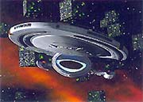
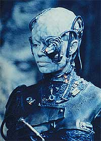

|
Borgs
a bordo, parte I
  Desde
a apresentao da premissa de Jornada nas Estrelas - Voyager,
todos sabiam que eventualmente a capit Janeway iria deparar-se
com a Coletividade Borg, afinal sua nave foi transportada para o
quadrante Delta, regio natal desses seres cibernticos. O que
ningum sabia era em que condies ou freqncia tais
encontros ocorreriam. Desde
a apresentao da premissa de Jornada nas Estrelas - Voyager,
todos sabiam que eventualmente a capit Janeway iria deparar-se
com a Coletividade Borg, afinal sua nave foi transportada para o
quadrante Delta, regio natal desses seres cibernticos. O que
ningum sabia era em que condies ou freqncia tais
encontros ocorreriam.
Surgiu ento um dilema para a equipe de produo do seriado:
como eles explicariam a sobrevivncia da pequena USS Voyager em
territrio Borg, lembrando que apenas um cubo foi responsvel
pela destruio de 39 naves da Frota no setor Wolf 359 (A
Nova Gerao, "The Best of Both Worlds"; e Deep
Space Nine, "Emissary")?
 A
busca por uma resposta a essa dvida culminou no episdio-duplo "Scorpion",
que marcou a primeira apario significativa na srie. Enquanto
viajava rumo ao quadrante Alfa, a tripulao se alarmou com o
surgimento de 15 cubos nos sensores de longo alcance. A assimilao
ou destruio pareciam inevitveis, mas as naves passaram pela
Voyager sem parar. Horas depois, estavam reduzidas a um vasto
campo de destroos...
Descobriu-se, ento, a presena de uma raa mais poderosa no
quadrante Delta, resistente tecnologia Borg. Trata-se da
"Espcie 8472" (designao Borg), seres telepticos
de uma outra dimenso, dotados de um sistema imunolgico
extremamente desenvolvido.
 O
fato de existir um adversrio altura dos Borgs provoca
sentimentos mistos na capit, pois podem significar a garantia de
passagem pela regio, ou o aniquilamento. O Doutor descobre um
meio de penetrar no organismo dos aliengenas usando nanossondas
Borgs modificadas. O
fato de existir um adversrio altura dos Borgs provoca
sentimentos mistos na capit, pois podem significar a garantia de
passagem pela regio, ou o aniquilamento. O Doutor descobre um
meio de penetrar no organismo dos aliengenas usando nanossondas
Borgs modificadas.
Janeway fora ento uma aliana temporria com a Coletividade:
forneceria o conhecimento que permitiria a derrota da Espcie
8472, em troca de passagem livre e segura por seu territrio.
 Nesse
ponto, temos a introduo de Seven of Nine (Jeri Ryan), que
acaba sendo separada da mente coletiva ao tentar assimilar a
Voyager. A partir de ento, os confrontos tornaram-se freqentes.
O quarto ano da srie baseia-se notadamente em Seven.
Na quinta e sexta temporadas, os Borgs voltam com fora total,
com a cinematogrfica apario da Rainha Borg...
Em duas semanas, a continuidade da presena Borg em Voyager
Daniel
Sasaki co-editor do Trek
Brasilis
|